Nachdem wir uns zu Hause einzeln über die unterschiedlichen Programme informiert hatten, besuchten wir gemeinsam die Homepages der für uns interessanten Optionen: „Greenfoot“ und „The Beauty and Joy of Computing“ Wir suchten uns einige Tutorials zu „Greenfoot“ raus und starteten mit der „Wombats Welt“, um uns einen Überblick über die Anwendung zu verschaffen. Allerdings fanden wir keinen richtigen Zugang, hatten kein ausreichendes Grundwissen und waren skeptisch gegenüber der Bildungssoftware. Nach der Stunde waren wir uns noch unschlüssig, welche der beiden Anwendungen wir zum lernen nutzen wollten und nahmen uns ein „Greenfoot“ Buch mit nach Hause, um uns weiter damit auseinanderzusetzen. Schließlich entschieden wir uns für „Beauty and Joy of Computing“, da die bunten Farben der blockbasierten Programmierprache Snap! ansprechend und der Lehrplan (Curriculum) schüler- und studentenfreundlich organisiert war. Außerdem wir die Anwendung genutzt, an Schulen und Universitäten in hauptsächlich den USA. Somit gehören wir, als Schüler, zur Zielgruppe des Tutorials, was unsere Entscheidung zusätzlich beeinflusste. Überzeugt hat uns zudem das Argument des Programmtitels, welcher Schönheit und Freude des Programmierens verspricht.
Willkommen in der Tic-Tac-Toe Galaxy. Bei diesem Projekt handelt es sich, wie dessen Name und Titel bereits andeuten, um ein Tic-Tac-Toe Spiel. Dieses wurde mit der blockbasierten Programmiersprache „Snap!“ erstellt, mit der wir uns im Laufe des Halbjahres intensiv auseinandergesetzt haben. Zur Vorbereitung auf dieses erste eigene Projekt haben wir das Tutorial „The Beauty and Joy of Computing“ (University of California, Berkeley) durchgearbeitet, sind beim Programmieren jedoch hauptsächlich von dessen Vorschlägen abgewichen und unseren eigenen Weg gegangen, um einen maximalen Lerneffekt zu erzielen.
Das Projekt ist in der Cloud von Snap! gespeichert. Solltet ihr das Spiel ausprobieren wollen, folgt dem Link (http://snap.berkeley.edu/snapsource/snap.html) und loggt euch mit unseren Zugangsdaten in die Cloud ein (Benutzername: muritoni Passwort: d5j48n). Wählt im Projektverzeichnis „Tolles Projekt“ und klickt auf die grüne Fahne, um das Spiel zu beginnen. Natürlich könnt ihr euch auch einen Überblick über Sprites und Skripte verschaffen, die wir im folgenden genauer erläutern werden.
Um das Spiel zu starten, muss die grüne Fahne geklickt werden. Auf dem folgenden Bild seht ihr das Programm des ersten Sprites (Sprite5): Auf einem neutralen Hintergrund erscheint der Sprite in Gestalt eines Space-Shuttles. Er bewegt sich in die Mitte des Spielfeldes, wo er den Spieler dazu auffordert, ihn zu klicken, damit das Spiel beginnt.
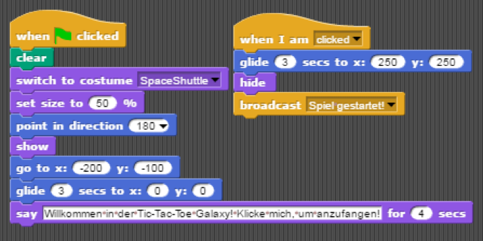
Übersetzung: Sobald die grüne Fahne geklickt wurde, reagiert der „When Clicked“ –Block und startet das Programm. Diesem folgend befreit der Sprite den Hintergrund von Spielfeld und Markierungen aus vorherigen Runden („Clear“). Dann nimmt er Gestalt und Größe eines Space-Shuttles an, zeigt nach Oben (180) und erscheint („Show“) auf der Bildfläche. Seine Route startet bei den Koordinaten x: -200 und y: -100, anschließend bewegt er sich, innerhalb von drei Sekunden, in die Mitte des Spielfeldes. Dort sagt er vier Sekunden lang: „Willkommen in der Tic-Tac-Toe Galaxy! Klicke mich, um anzufangen!“. Es passiert zunächst nichts, bis der Klick des Spielers das nächste Programmteil auslöst. Nun fliegt die Rakete, innerhalb von drei Sekunden, zu einem Punkt außerhalb der Sichtweite der Spieler (x: 250 y: 250). Mithilfe des „Broadcast“-Blockes vermittelt der Sprite, nach Befolgung der übrigen Anweisungen, die Nachricht „Spiel gestartet!“. Diese Nachricht kann von weiteren Sprites empfangen werden und sie anweisen, ihr Programm zu starten.
Nach Beginn des Spiels wird ein Spielfeld von Sprite1 aufgemalt. Dieses Gitter besteht aus drei Zeilen und drei Spalten und ist vielen als herkömmliches Tic-Tac-Toe Spielfeld bekannt.
Übersetzung: Nachdem Sprite1 die Broadcast-Nachricht „Spiel gestartet!“ von Sprite5 erhalten hat, zeigt er sich. Er hat ein Saturn-Kostüm an! In diesem Programmteil nimmt der Sprite die Funktion eines Stiftes an, der eine Linie von vordefinierter Farbe und Breite nach sich zieht, während er sich über den Hintergrund (Stage) bewegt. Um zu dem Eckpunkt des Spielfelds (x: -150 y: -50) zu gelangen, ohne Schlieren /Striche zu hinterlassen, ist der „Pen Up“-Block nötig. Bevor der „Stift“ (Sprite1) auf das „Papier“ (Hintergrund) gesetzt wird, werden dessen Farbe und Breite definiert. Mit dem „Pen Down“-Block beginnt der Stift das Feld mit drei Zeilen und drei Spalten, der Breite 100, zu zeichnen. Nachdem er 1,5 Sekunden lang gewartet hat, um dem Spieler eine Phase der Orientierung zu verschaffen, vermittelt er die Broadcast-Nachricht „Spielfeld vorbereitet!“ an die übrigen Sprites und verschwindet von der Bildfläche. Auf den folgenden Bildern ist zu erkennen, wie der Block, der den Sprite dazu anweist, das 33 Spielfeld auf den Hintergrund aufzubringen, in drei Schritten entsteht:
1.Zunächst haben wir den Block „Make Tile of Size ...“ erstellt, mithilfe unseres Vorwissens aus den Tutorials. Damit die Größe der Spielfeldzellen auch nachträglich angepasst werden kann, haben wir die Kantenlänge nicht definiert, sondern eine Variable eingefügt. Diese nennt sich „Tile Size“ und beschreibt die Anzahl von Schritten, die der Sprite sich bewegt, bevor er sich um 90° nach rechts dreht und damit eine Ecke bildet. Zudem ist für unser weiteres Vorgehen wichtig, dass die Bewegung an der Stelle aufhört, an der sie angefangen hat, weshalb eine der vier Kanten doppelt gezeichnet wird. Das ist nicht für das Zeichnen einzelner Spielfeldzellen, sondern für das Zeichnen einer Reihe von Spielfeldzellen relevant.
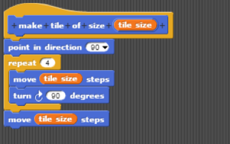
2.Wie bereits angedeutet, werden im nächsten Schritt mehrere Spielfeldzellen zu einer Reihe zusammengefügt, dessen Länge von der Variable „Number of Tiles“ definiert wird. Dabei kann der Vorgang, ein Quadrat von gleichem Start- und Endpunkt zu zeichnen, beliebig oft wiederholt werden, im Falle von Tic-Tac-Toe genau dreimal.
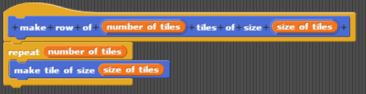
3.Im dritten Schritt werden mehrere Reihen, unter Einführung einer weiteren Variable („Number of Rows“), zu Spalten zusammengefügt. Da der Sprite zu einem universalen Starpunkt zurückkehren muss, um eine neue Reihe abzubrechen, sieht das Programm komplizierter aus, als es eigentlich ist. Der Sprite zeichnet eine Reihe von Spielfeldzellen, zeigt anschließend nach links und bewegt sich um die Länge der gesamten Reihe, also um Kantenlänge und Anzahl der Spielfeldzellen miteinander multipliziert. Anschließend zeigt er nach oben und macht eine Anzahl von Schritten, die der Kantenlänge der Felder entspricht. Dies ist der Punkt, von dem er beginnen kann, eine neue Reihe zu zeichnen. Nur bei der letzten Zeile braucht der Sprite nicht zum Startpunkt zurückkehren, da er keine neue Zeile anbrechen muss.
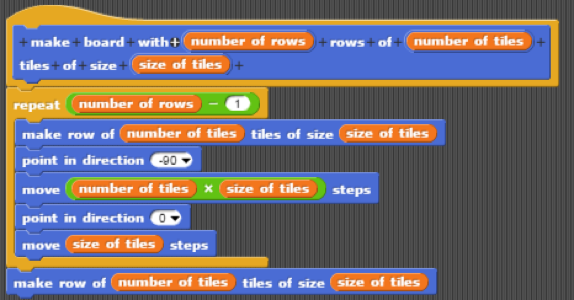
In diesem Abschnitt der Dokumentation geht es darum, wie es dazu kommt, dass die Speilfeldmarkierungen von Sprite2 und Sprite3, den „Spielern“, in jeder Zelle und Farbe zentriert sind und eine vordefinierte Form annehmen, um eine Übersichtlichkeit des Spielfeldes zu gewährleisten.
Wichtig dabei ist vor allem der Reporter „Which Tile?“, der die aktuelle Position des Sprites auf dem Spielfeld prüfen kann, um Informationen über die genaue Zelle, in der der Sprite sich befindet, herauszugeben. Bevor wir mit dem Bau dieses individuellen Blockes beginnen konnten, mussten wir zunächst die Anzahl der Felder, die Breite der Spalten und Zeilen und den Mittelpunkt des Spielfeldes bestimmen, damit kein Interpretationsspielraum bleibt. Da es sich um ein Tic-Tac-Toe Spiel handelt, entschieden wir uns für neun Felder, also drei Spalten und drei Zeilen. Aus Gründen der Einfachheit kürten wir die Koordinaten x: 0 und y: 0 zur Mitte des Spielfeldes, dementsprechend mussten die Zeilen eine Höhe und die Spalten eine Breite von je 100 haben, damit das gesamte Spielfeld auf dem Hintergrund Platz finden konnte. So konnten wir jeder der Spielfeldachsen, also der Linien, die die Ränder und Zwischenräume des Spielfeldes definieren, Koordinaten zuteilen. Bevor wir jedoch einen Block zusammensetzen konnten, der direkt die Nummer der Spielfeldzelle verrät, mussten wir zunächst Blöcke erstellen, die die Position des Sprites auf die X-Koordinaten jeder Spalte und auf die Y-Koordinaten jeder Zeile prüfen und darüber Auskunft geben, in Form einer booleschen Variable gibt. Hier sind alle Reporter aufgelistet, die prüfen, ob der Sprite in Reihe 1, 2, 3 oder in Spalte 1, 2, 3 liegt.
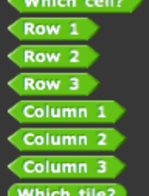
Beispiel Spalte: Damit die Bedingung, der Sprite befände sich in der ersten Spalte, der Wahrheit entspricht, muss dessen X-Koordinate einen Wert zwischen -150 und -50 annehmen. Eine Spalte ist nämlich 100 Schritte breit, das Zentrum des Spielfeldes befindet sich bei x: 0 und y: 0.

Beispiel Zeile: Damit die Bedingung, der Sprite befände sich in der ersten Zeile, der Wahrheit entspricht, muss dessen Y-Koordinate einen Wert zwischen 150 und 50 annehmen. Eine Zeile ist nämlich 100 Schritte hoch, das Zentrum des Spielfeldes befindet sich bei x: 0 und y: 0.
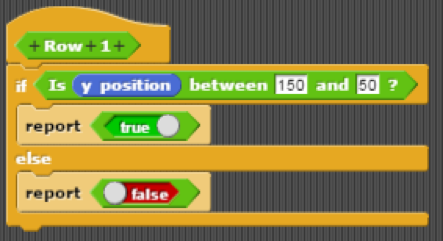
Im nächsten Schritt, der Erstellung des „Which Tile?“-Reporters, werden die Kriterien von Zeile und Spalte miteinander in Verbindung gebracht, um Aufschluss über die genaue Zelle zu erhalten, in der der Sprite sich aktuell befindet. Die Spielfeldzellen sind, in Leserichtung, von eins bis neun nummeriert, was das Erkennungssystem erheblich vereinfacht. Wenn also die Bedingungen für Zeile eins und Spalte eins beide wahr sind, befindet sich der Sprite in Zelle 1. Wenn die Bedingungen für Zeile eins und Spalte zwei wahr sind, befindet sich der Sprite in Zelle 2. Nach diesem Muster kann man jeder Zelle eine Spalte und eine Zeile zuordnen. So ist jede Position des Sprites in einer der neun Spielfeldzellen abhängig von der Nummer der Zeile und der Nummer der Spalte, also von seinen Koordinaten, deren Verständnis wir in mehreren Schritten erheblich erleichtert haben.
Auf diesem Bild ist der Inhalt des Reporters „Which Tile?“ zu erkennen.
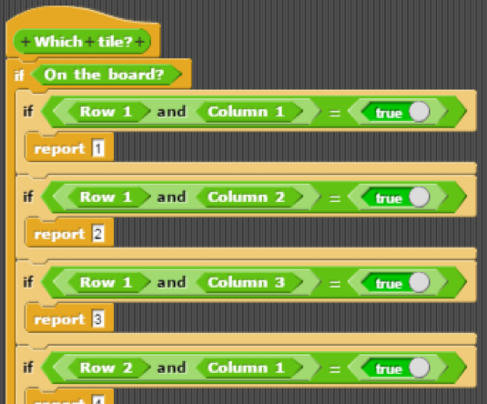
Nun zu den Markierungen, also den Färbungen der Spielfeldzellen in der Farbe, die dem Spieler entspricht, der den Zug gemacht hat: Wir haben uns, für unsere Tic-Tac-Toe Galaxy, dafür entschieden, die Markierungen auf dem Spielfeld schlicht zu halten. Im Gegensatz zum originalen Tic-Tac-Toe haben diese eine quadratische Form, die sich für den Spieler nur in ihrer Farbe unterscheiden, Form und Größe sind für beide Sprites gleich. Dies ist nicht nur Geschmackssache, sondern hat auch einen praktischen Nutzen. Da die Grundstruktur beider Markierungen gleich ist, musste diese nur einmal überlegt, durchdacht und programmiert werden. Damit die Markierungen stets symmetrisch sind, beginnt der Sprite seine Zeichnung in der Mitte der Spielfeldzelle. Die Koordinaten dieser Mitte mussten für jede der neun Zellen definiert und mit dem oben genannten Reporter in Verbindung gebracht werden. Die Bilder stellen zwar den zweiten Schritt des Programmierens dar, die hier gewählte Chronologie ist für den Leser jedoch leichter zu verstehen und begreifen.
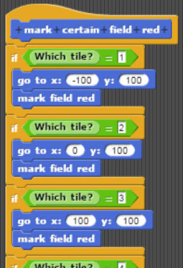
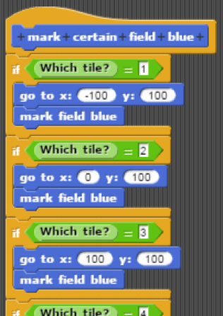
Von der Mitte der jeweiligen Spielfeldzelle aus beginnend, nimmt der Sprite nun wieder die Rolle des „Stiftes“ ein, der eine Linie von definierter Breite und Farbe hinter sich zieht, sobald er sich über die Stage bewegt. Doch bevor der Sprite mit dem Zeichnen beginnt, begibt er sich in eine Ecke der Zelle, was Symmetrie garantiert und das Programmieren erleichtert. Von dieser Ecke ausgehend, zeichnet der Sprite also ein Quadrat der Kantenlänge 70. Anschließend füllt er das Quadrat aus, mithilfe einer Hin- und Herbewegung, die siebenfach wiederholt und mit jeder Wiederholung fünf Schritte nach oben versetzt wird. Diese fünf Schritte sind an die Stiftbreite angepasst und wechseln sich mit den siebzig Schritten ab, die es braucht, um eine „Bahn“ zu ziehen. Auf den unteren Bildern sind die individuell erstellten Blöcke zu sehen, die die Markierungen der beiden Spieler, Sprite2 und Sprite3, definieren. Zum Verständnis: Bevor wir das Programm endgültig designt haben, hatten die Sprites noch rote und blaue Markierungen und selbst die entsprechende Farbe. „Rot“ entspricht nun der gelben Markierung des Ufos, „Blau“ entspricht der grauen Markierung des Astronauten.
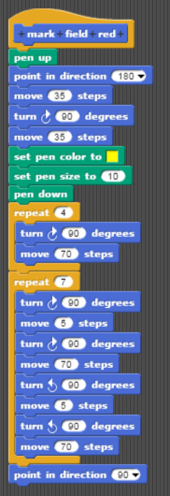

Im Verlauf des Spiels haben beide Spieler die Möglichkeit, die Sprites auf eine der Spielfeldzellen zu ziehen, und sie dort abzusetzen, um eine Markierung vorzunehmen. Dazu werden die eben erklärten und erstellten Blöcke genutzt, die ein bestimmtes Feld in einer bestimmten Farbe markieren können.

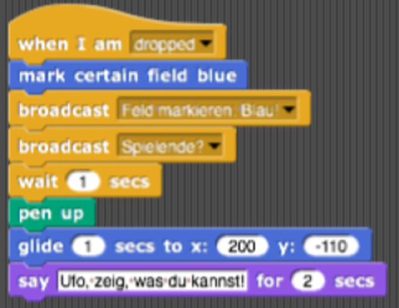
Nachdem die Sprites also die gewollte und gewünschte Spielfeldzelle markiert haben, senden sie zwei Broadcast-Nachrichten („Feld markieren: Blau!“ und „Spielende?“) und warten eine Sekunde, bevor sie zu ihrer ursprünglichen Position zurückkehren. Anschließend geben sie eine weitere Nachricht ab, jedoch nicht im Hintergrund des Geschehens, sondern für den Spieler sichtbar. Dieser soll dazu aufgefordert werden, die Maus weiterzugeben und mit dem nächsten Sprite eine Markierung auf dem Spielfeld zu machen. Das Ufo sagt nach einem vollendeten Spielzug: „Astronaut, du bist an der Reihe!“. Der Astronaut sagt nach einem vollendeten Spielzug: „Ufo, zeig, was du kannst!“
Bisher kann also ein Tic-Tac-Toe Feld von Sprite1 auf den Hintergrund (Stage) gezeichnet werden und Markierungen des Spielfelds, durch Sprite2 und Sprite3, können vorgenommen werden. Nun soll es darum gehen, wie der Gewinn oder Verlust der Spieler automatisch erkannt werden kann, über einen vierten Sprite, den „Spielleiter“.
Dazu werden insgesamt 18 Variablen eingeführt, die einem Feld und einer Farbe zugeteilt werden, und den booleschen Wert „True“ annehmen, sobald auf genau ihrem Feld eine Markierung von genau ihrer Farbe vorgenommen wird.
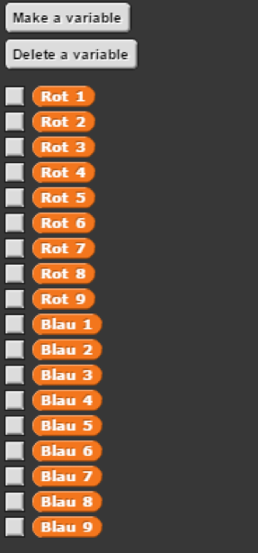
Am Anfang des Spiels, noch bevor Sprite2 und Sprite3 für den Spieler zu sehen sind, setzen sie die Variablen ihrer jeweiligen Farbe zurück, auf den booleschen Wert „False“. Sprite2, also das Ufo, setzt die ihm zugehörigen Variablen Rot1 - Rot9 zurück. Sprite3, also der Astronaut, setzt die ihm zugehörigen Variablen Blau1 - Blau9 zurück. Dies geschieht, nachdem sie die Broadcast-Nachricht „Spielfeld vorbereitet!“ von Sprite1, in Gestalt eines Saturns, erhalten haben. Der zugehörige Programmteil ist auf diesen Bildern zu erkennen:

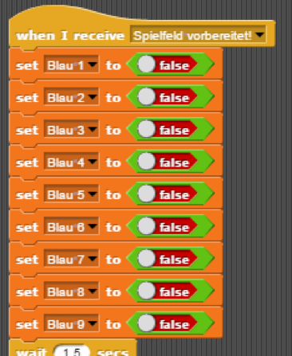
Sobald jedoch eine der Spielfeldzellen in einer der Farben gefärbt wurde, muss die dazugehörige Variable den Wert „True“ annehmen. Erinnerung: Nach der Markierung des Feldes sendet Sprite2 die Broadcast-Nachricht „Feld markieren: Rot“, Sprite3 sendet die Broadcast-Nachricht „Feld markieren: Blau!“ Sie empfangen diese Nachrichten selbst, anstatt sie an den jeweils anderen weiterzugeben. Auf den folgenden Screenshots ist das Programm abgebildet, welches von diesen Broadcasts ausgelöst wird.

Übersetzung: Der Reporter „Which Tile?“ wird in insgesamt neun If-Bedingungen den Nummern der Spielfeldzellen gleichgesetzt. Wenn also, beispielsweise, der Sprite sich aktuell in Zelle1 befindet, da er nach der Markierung eine Sekunde wartet, wird die Variable Rot1 (Sprite2) oder Blau1 (Sprite3) richtig gestellt. Anschließend, wird, über eine Broadcast-Nachricht, dem Spielleiter (Sprite4) mitgeteilt, den Spielstand zu prüfen.
So wird also eine markierte Spielfeldzelle nicht nur auf das Spielfeld aufgezeichnet, sondern auch im Variablenverzeichnis registriert. Das ist von hoher Relevanz für die Bestimmung des Gewinners / Verlierers.
Der Spielleiter (Sprite4) prüft nach jedem Spielzug, den Ufo und Astronaut machen, den aktuellen Spielstand, wie es ihm mit der Broadcast-Nachricht „Spielstand prüfen: Rot / Blau!“ mitgeteilt wurde. Genauer funktioniert dieser Prozess folgendermaßen:
Es gibt insgesamt sieben Kombinationen von Feldern, mit denen man das Spiel gewinnen kann, dazu gehören drei Zeilen, drei Spalten und zwei Diagonalen. Im Skript des Spielleiters ist ein „Prüfprogramm“ für jeden Spieler niedergeschrieben. Diese setzen sich aus mehreren If-Bedingungen zusammen, in denen gecheckt wird, ob die drei Spielfeldvariablen, die es braucht, um das Spiel zu gewinnen, dem booleschen Wert „True“ entsprechen. Wenn das Ufo (Rot) also Spielfeldzellen eins, zwei und drei in seiner Farbe markiert hat und dies im Variablenverzeichnis markiert ist, müssen die Variablen Rot1, Rot2 und Rot3 zwangsläufig der Wahrheit entsprechen. Der Spielleiter registriert und annonciert den Gewinner, nachdem er die Broadcast-Nachricht „Gewinner steht fest!“ abgegeben hat. Die dazugehörigen Skripte sind auf den folgenden Screenshots zu erkennen.


Für die Ankündigung des Gewinners haben wir einen individuellen Block erstellt. Bevor dieser in Kraft tritt, müssen die beiden Spieler (Sprite2 und Sprite3) unsichtbar werden, um das Layout und Design nicht zu stören. Sie erhalten die eben genannte Broadcast-nachricht „Gewinner steht fest!“ und verstecken sich dann, sodass der Tic-Tac-Toe Spieler sie nicht mehr erkennen kann. Das hier abgebildete Programmstück ist in den Skripten beider Sprites vermerkt.

Nun kann der Spielleiter ungestört den Gewinner küren. Dazu nimmt er die Gestalt des Gewinners an, zieht also ein Ufo- oder Astronautenkostüm an, auf denen, in blau, das Textbanner „Gewinner“ steht. Der Sprite befindet sich, in dieser Form, zunächst in der Mitte des Spielfeldes und bewegt sich dann auf und ab, um die freudige Nachricht zusätzlich zu unterstreichen. So sieht das Skript von Sprite2 (Rot) und Sprie3 (Blau) dazu aus:
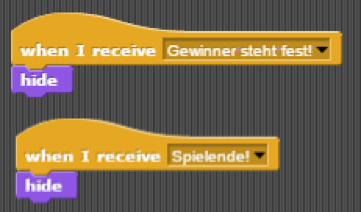
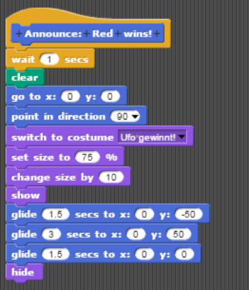
Übersetzung: Der „Announce: Red wins!“-Block, der unter den Kategorien „Motion“ und „Command“ abgelegt ist, enthält ein Programm zur Ankündigung des Spielgewinners. Dafür befreit der Sprite4 (Spielleiter) zunächst den Hintergrund von Spielfeldgitter und Markierungen („Clear“). Bevor er sich dem Spieler zeigt, begibt er sich zu den Koordinaten x: 0 und y: 0, zeigt in Richtung 90, also nach rechts, und wechselt sein Kostüm. Dabei kann es sich entweder um „Ufo gewinnt!“ oder „Astronaut gewinnt!“ handeln, die Größe des Sprites wird auf 75% + 10% = 85% festgelegt. Nun ist alles vorbereitet und der Sprite kann sich zeigen („Show“). Die Auf- und Abbewegung setzt sich aus drei Teilen zusammen. Zunächst bewegt sich der Sprite, innerhalb von 1.5 Sekunden, nach unten, also zu den Koordinaten x: 0 und y: -50. Anschließend bewegt sich der Sprite, innerhalb von 3 Sekunden, nach oben, also zu den Koordinaten x: 0 und y: 50. Zuletzt bewegt sich der Sprite, innerhalb von 1.5 Sekunden, zurück in die Mitte des Spielfeldes, also zu den Koordinaten x: 0 und y: 0. Nach der Bewegung macht der Sprite sich für den Spieler unsichtbar (“Hide“) und das Spiel kann, durch klicken der grünen Fahne, erneut begonnen werden.
Beim Tic-Tac-Toe spielen kann es natürlich auch passieren, dass es keinen Gewinner / Verlierer gibt, obwohl das Spielfeld schon voll von Markierungen ist. Auch diesen Fall haben wir in unserem Programm bedacht. Auf dem folgenden Screenshot ist das Skript dazu abgebildet:
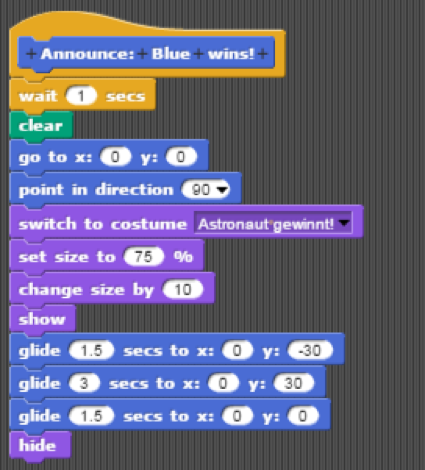
Erinnerung: Sobald Sprite2 und Sprite3 auf eine Spielfeldzelle gezogen werden, geben sie zwei Broadcast-Nachrichten ab. Die erste, „Feld markieren: Rot / Blau!“ wurde bereits behandelt (Automatische Registrierung und Ankündigung des Gewinners). Die zweite, „Spielende?“ wird vom Spielleiter empfangen und löst das im obigen Screenshot abgebildete Programmstück aus.
Dieses prüft, mit Hilfe des Variablenverzeichnisses, ob alle Spielfeldzellen bereits markiert sind, in einer der zwei Farben. Wenn also Rot1 oder Blau1, Rot2 oder Blau2, ... und Rot9 oder Blau9 „True“ sind, ohne das zuvor ein Gewinner festgestellt wurde, wird das Spiel trotzdem beendet. Dabei ist das „Und“ in der If-Bedingung von hoher Relevanz. Nun nimmt der Spielleiter die Gestalt eines Aliens, von festgelegter Größe (75%), an, begibt sich in die Mitte des Spielfeldes, sagt „Das habt ihr beide gleichermaßen versiebt! Gratulation“, wartet fünf Sekunden und versteckt sich anschließend. Das Programm dazu ist analog zu dem Block „Announce: Red / Blue wins!“ und relativ selbsterklärend:
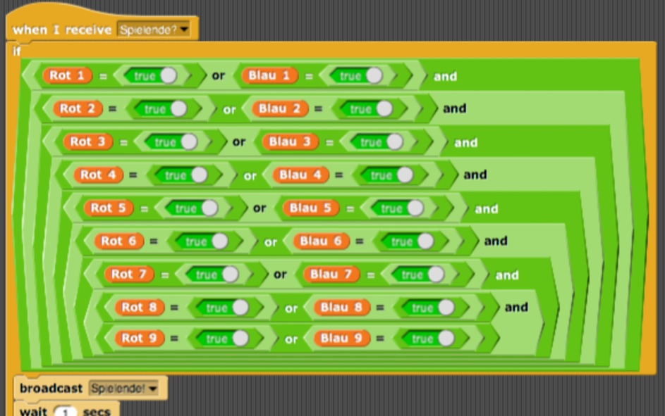
Durch Klicken der grünen Fahne kann das Spiel nun von neuem beginnen.
Durch unsere mangelnde Programmier-Erfahrung hat das Tic-Tac-Toe Spiel kleinere Fehler, zu deren Berichtigung es bisher noch nicht kam, aber in der Zukunft kommen wird.
Der erste Fehler ist die Tatsache, dass die Reihenfolge der Spielzüge nicht im Programm vermerkt ist. Das bedeutet konkret, das man mehrmals hintereinander den gleichen Sprite auf das Spielfeld ziehen kann, ohne das der jeweils andere zwischendurch zum Zuge kommt. Wir haben versucht, dass durch Sprechblasen auszubügeln, die nach einem Zug den anderen Spieler auffordern, seinen eigenen Sprite auf das Spielfeld zu ziehen, diese Sprechblasen sind jedoch nicht verbindlich und können leicht umgangen werden. Zudem machen wir uns hier das Allgemeinwissen der Spieler zu nutze. Jeder weiß, wie Tic-Tac-Toe funktioniert oder funktionieren soll.
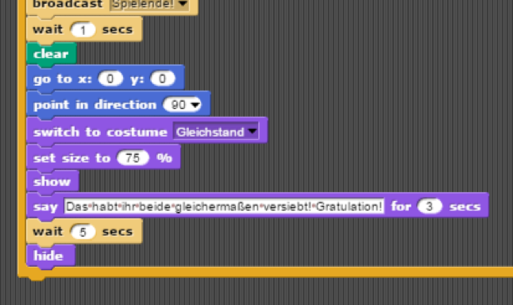

Der zweite Fehler im Programm hängt eng mit dem ersten zusammen. Man kann nämlich eine Markierung mit seiner eigenen Markierung überschreiben. Dies bringt das Variablensystem durcheinander und führt dazu, dass entweder kein, oder der falsche Gewinner / Verlierer festgestellt wird. Zudem wird das Spiel dadurch unfair, abhängig davon, ob die Spieler von dem Fehler wissen oder nicht. Ein Lösungsansatz könnte sein, vor dem Markieren die Variable des gewünschten / gewollten Feldes zu prüfen, jedoch sind unsere Versuche mit dieser Methode stets gescheitert.
Insgesamt haben wir vor, uns um die Fehler zu kümmern, um die Tic-Tac-Toe Erfahrungen der Spieler so einfach angenehm wie möglich zu gestalten. Jedoch handelt es sich bei diesem Projekt noch um einen Rohdiamanten, den wir, im Laufe des kommenden Halbjahres, schleifen und perfektionieren wollen. Wir hoffen, dass unsere Arbeit bisher trotzdem zu einem zufriedenstellenden Ergebnis geführt hat, für den, der die standardisierten Tic-Tac-Toe Regeln verstehen und anwenden kann.
Wir wählten als unseren Hintergrund eine Galaxie. Dort soll das Tic-Tac-Toe Spiel stattfinden.
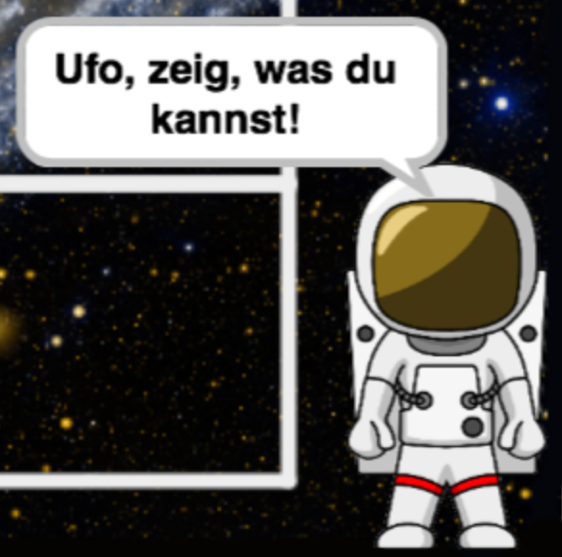
Da unser Tic-Tac-Toe Spiel im Welltall stattfindet, begrüßt eine Rakete (Sprite1) den Spieler.
Für den zweiten Sprite, welcher das Tic-Tac-Toe Spielfeld zeichnet, nahmen wir einen Saturn.

Passend zu der Galaxie, ist Spieler eins (Sprite3) ein Ufo.

Spieler zwei (Sprite4) ist ein Astronaut.
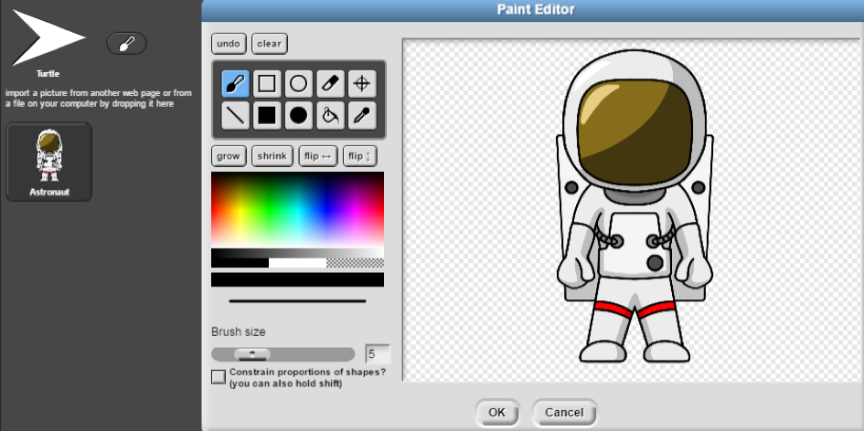
Gewinnen kann Spieler eins oder Spieler zwei…

Gewinnt Spieler eins, erscheint ein Ufo mit dem Schriftzug „Gewinner“.
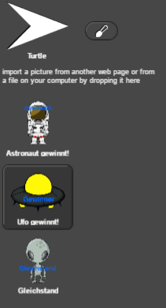
Gewinnt Spieler zwei, so erscheint ein Astronaut mit dem Schriftzug „Gewinner“.
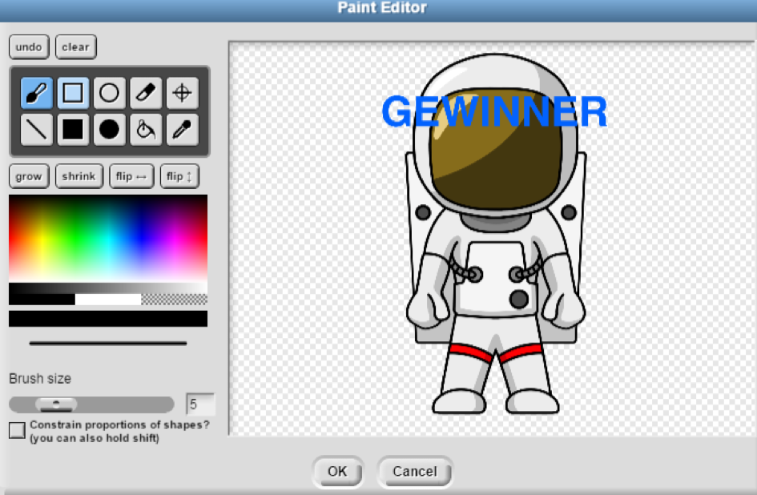
Gewinnt keiner der Spieler, so erscheint (passend zum Weltall) ein Alien, mit dem Schriftzug „Gleichstand“.

Wir sind sehr zufrieden mit dem Ergebnis unserer Arbeit. Wir haben es geschafft ein eigenes und bespielbares Tic-Tac-Toe Spiel zu erstellen. Wir haben uns ausführlích mit dem Programm Snap! befasst und dabei vieles neues gelernt. Nun sind wir einen Schritt weiter und freuen uns auf ein tolles neues Projekt!